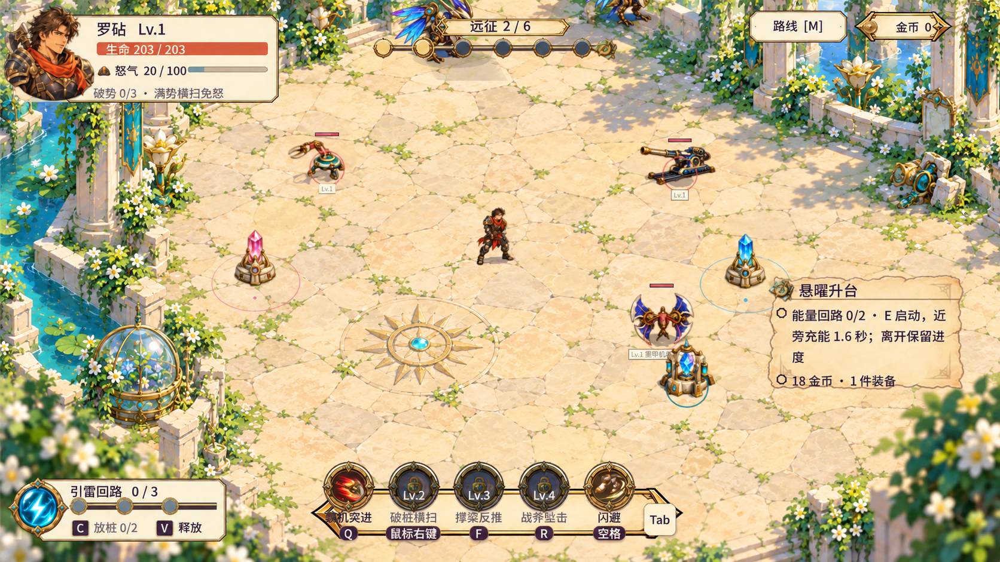
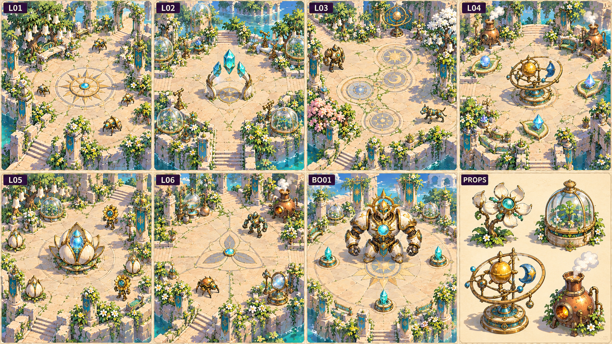
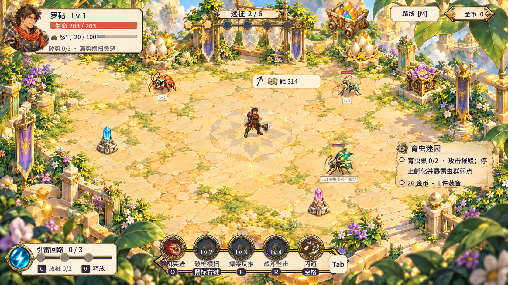
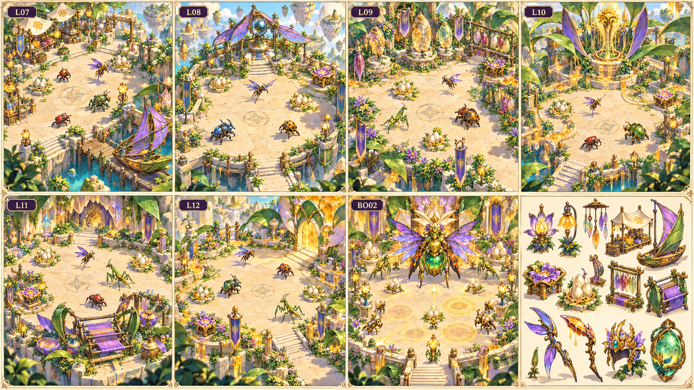
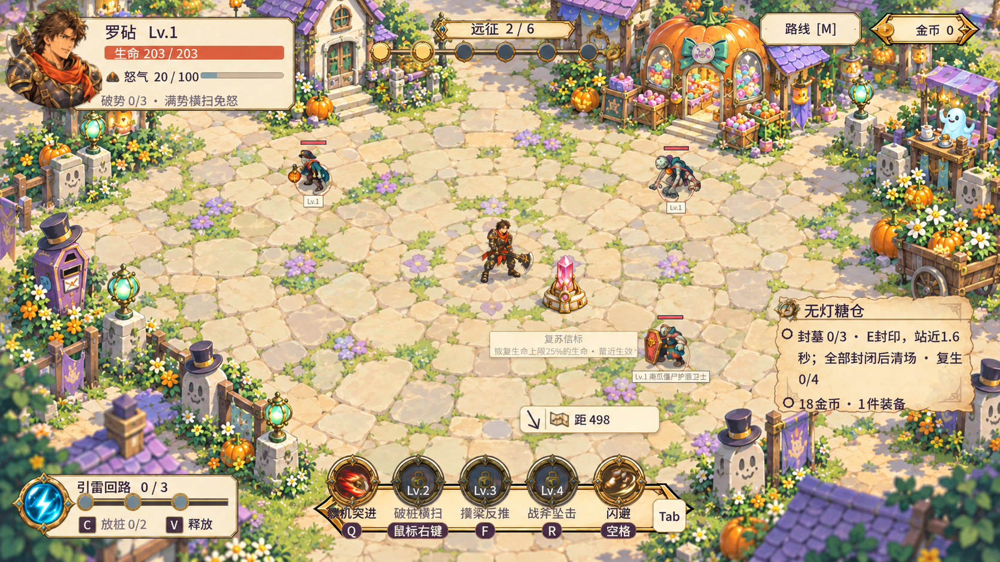
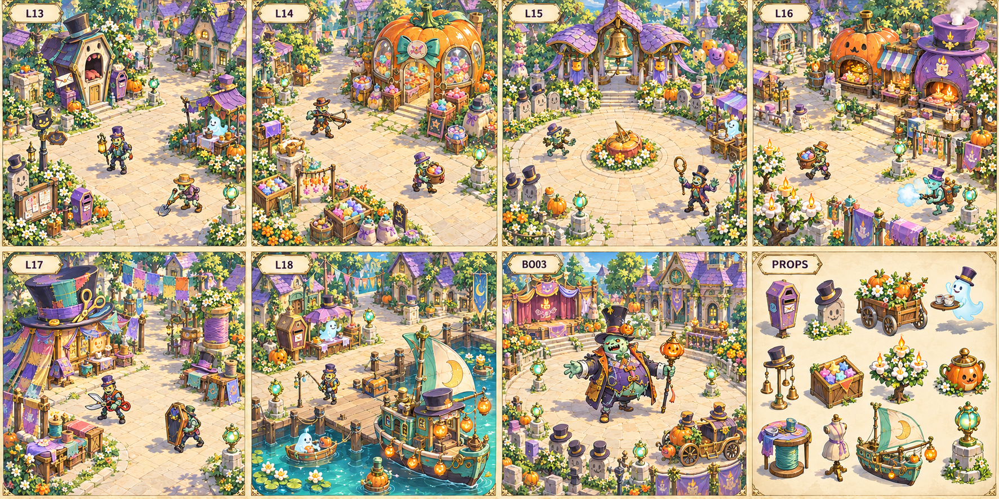
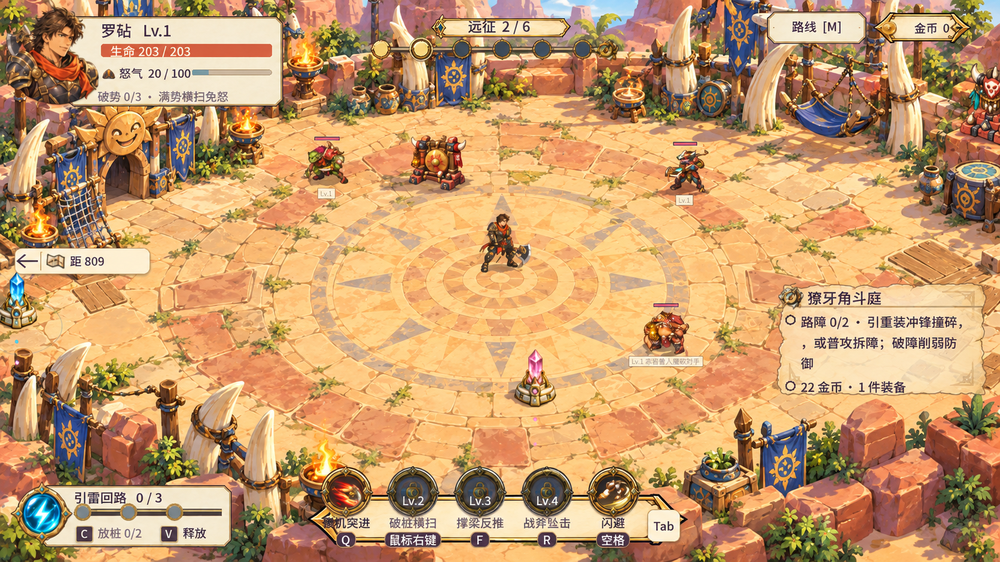
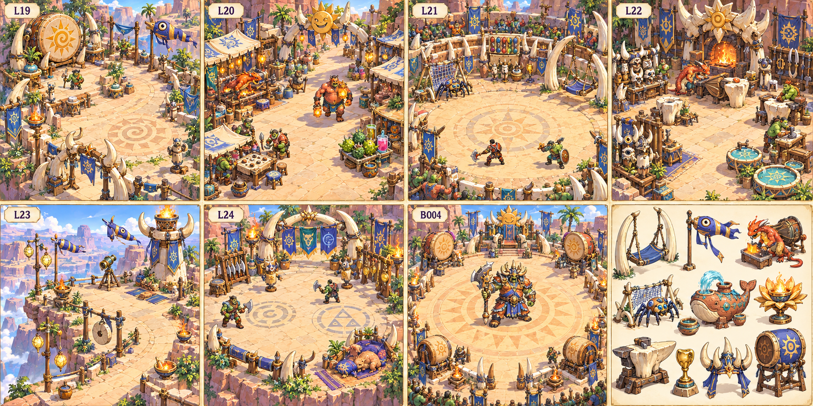
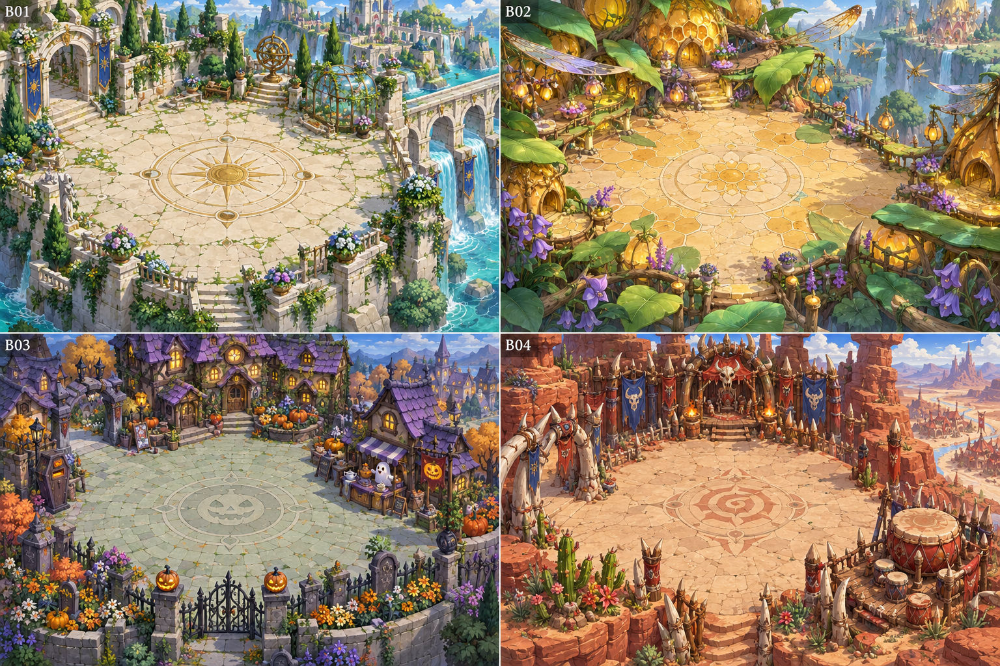

L01 · 晴辉门庭战斗房间
花钟门庭·斜向折线与宽阔回环
接通两处庭门回路，再清理巡庭守卫。
本房边缘：西南入口与园匠小径相接，北缘是钟铃花廊，东缘露出细渠和睡莲，南缘缓接种子花圃；门庭不以封闭高墙收边。
点击布局图，查看固定位置和物件编号。
明亮手绘卡通奇幻 · 古典遗迹与魔法文明 · 高机位三分之四斜俯视 · 2.5D。每房都有自己的地标、生态和生活物件；地形、道具、目标与信标位置固定。
此册用于确认设计，尚未替换游戏中的随机道具摆放。高难度可以增加怪群数量、属性及掉落品质，不移动场景元素。
7 张房间设计图 / 点击逐房图片放大
晴辉园匠曾让太阳、泉水与机械花共同照料这座庭园。校准中断后，构装守卫继续执行封园命令；玩家循着六处失衡的园艺机关，抵达日曜机关巨像守护的核心庭院。

保留当前角色、怪物与HUD，展示固定摆放及完整边缘的预期效果。新增地标、边缘、图标需后续输出新素材；此图不是已上线截图。

美术板表达外形与材质，逐房布局图确定路线、物件和目标的固定位置。新道具与独立机关均为待确认设计。
花钟门庭·斜向折线与宽阔回环
接通两处庭门回路，再清理巡庭守卫。
本房边缘：西南入口与园匠小径相接，北缘是钟铃花廊，东缘露出细渠和睡莲，南缘缓接种子花圃；门庭不以封闭高墙收边。
点击布局图，查看固定位置和物件编号。
干地光拱·上下双线汇入中央晶庭
接通三处光桥回路，再清理浮晶守卫。
本房边缘：北缘窄渠下方能见小导水嘴，东西出入口连连续白石岸路，南缘温室花架与低庭阶呼应晶拱；外围水只作边景，不进入主战地面。
点击布局图，查看固定位置和物件编号。
三环符文·北绕南归的S形线路
接通两处符文回路，再清理回廊守卫。
本房边缘：北缘透空报时花廊，西侧春花与东侧冬晶苗分区，南缘细叶花圃接完整短石边；外圈季节铃树提供轮廓，不添加实体长墙。
点击布局图，查看固定位置和物件编号。
星仪光秤·偏北三段折线
接通三处光秤回路，再清理仪场守卫。
本房边缘：北缘是导日镜棚和透明铜框，南缘为露天记录员花园，东西外侧能见小铜炉的独立短管与冷露盆；地砖经浅台阶自然落到外圈草地。
点击布局图，查看固定位置和物件编号。
花蕾升舱·南线切入北线的宽U形
接通两处升舱回路，再清理巡台守卫。
本房边缘：北缘背景透空花舱升降架，东西侧是与主地面接续的候日平台，南缘低栏和下层晶花园；升降高差只发生在外圈背景，不竖起内场纹理墙。
点击布局图，查看固定位置和物件编号。
三瓣供能庭·南北交替的Z形线路
接通三处辉核回路，再清理祭庭守卫。
本房边缘：外围分别出现凝露白陶瓶架、暖炉小亭、排光镜棚，细铜管沿真实石收边绕行；北侧花冠门与首领庭连通，南侧花叶前景淡化。
点击布局图，查看固定位置和物件编号。
日曜花冠庭·开放圆环与三处破盾接座
利用三处能源接座形成破盾窗口，击败日曜机关巨像。
本房边缘：外环是花冠仪式庭，北方庆典铜叶门、东西复苏温室、南方仪式阶梯；水景只在花园外圈，边缘均有独立短石侧面与绿植衔接，不出现灰白截断。
点击布局图，查看固定位置和物件编号。
7 张房间设计图 / 点击逐房图片放大
开放式晴光蜂谷中的蜜晶运输、翼巢观测、成年礼、花粉通风与叶片编织共同供养女王育巢。树脂心核失衡令虫群护巢攻击；玩家依次破巢，恢复蜜流。七间独立固定场景形成完整文明，而非同一块地图随机换物件。

保留当前角色、怪物与HUD，展示固定摆放及完整边缘的预期效果。新增地标、边缘、图标需后续输出新素材；此图不是已上线截图。

美术板表达外形与材质，逐房布局图确定路线、物件和目标的固定位置。新道具与独立机关均为待确认设计。
蜂蜡集市与蜜晶码头
击破两座幼巢，回收码头过滤晶芯并清理通往翼巢的虫群。
本房边缘：下缘叶帆码头与编叶栏沿曲线收地，左上集市接蜂蜡屋檐；琥珀溪与停舟只在码头外侧，下侧出界仍有叶根与溪岸延景。
点击布局图，查看固定位置和物件编号。
翼巢观测与花粉航线
击破三座占据观测庭的幼巢，采集蜜晶航标并清群。
本房边缘：上缘翼巢观测亭背后是远景浮巢、蜂谷与云隙；浮岛边不切入战斗地面，南缘通过叶根台座、花圃与编叶栏连续收边。
点击布局图，查看固定位置和物件编号。
蜕壳礼庭与育幼花圃
击破三座幼巢，打断育母孵化并清理蜕壳礼庭。
本房边缘：北缘蜕壳廊与蜂蜡育幼小屋形成文明背景；南侧渐变到粉铃花带和空茧花架，花架分段并贴外缘，不形成封闭迷宫墙。
点击布局图，查看固定位置和物件编号。
花粉风井与导风叶瓣
击破两座幼巢，恢复花蕊风井的树脂回流并清群。
本房边缘：北缘花蕊风井接巨叶高台，外围透明回流蜜脉围绕花圃渐落到谷底；南缘露珠灌木与花瓣阶沿自然衔接，井口不横切场地。
点击布局图，查看固定位置和物件编号。
日照虫窟口的叶片织台
击破三座幼巢，回收虫群迁徙研究匣并清理织台通路。
本房边缘：北缘明亮虫窟口用弧形旧壳和藤叶包裹，向内仅浅进一层蜂蜡阶；下缘螳螂织棚与茧枝构成生活边界，仍有外侧叶根承托连续庭面。
点击布局图，查看固定位置和物件编号。
外围分蜜渠与花萼闸门
击破三座末巢，校正分蜜花闸后前往虫后育巢。
本房边缘：北侧细窄分蜜渠沿弯曲花萼阶沿流向右上育巢叶门；中央地面完整，外围花粉草带与蜜脉消除边缘硬切，右侧出口地面延续到叶门后。
点击布局图，查看固定位置和物件编号。
女王育巢与四瓣蜂冠庭
击破三座护王幼巢，躲避虫后招式，在暴露窗口击败琥珀虫后。
本房边缘：北缘高大育巢冠座背接蜂蜡巢山，左右圆弧花冠与巨叶托住大庭；南入口由低叶根坡进入，育巢边角与远景蜂谷完整可见，前景大叶只限下角。
点击布局图，查看固定位置和物件编号。
7 张房间设计图 / 点击逐房图片放大
午休墓灯与节庆墓铃失调，缝合镇长把镇民的梦缝进永不散场的礼服。玩家沿门街、糖仓、广场、烛炉街、作坊和码头稳定墓灯，在暖阳墓园替小镇完成一次安静的谢幕。

保留当前角色、怪物与HUD，展示固定摆放及完整边缘的预期效果。新增地标、边缘、图标需后续输出新素材；此图不是已上线截图。

美术板表达外形与材质，逐房布局图确定路线、物件和目标的固定位置。新道具与独立机关均为待确认设计。
棺材邮局与礼帽迎宾街
封闭两座墓灯，清理门街；封墓点可从主街与背街分别接近。
本房边缘：北缘棺材邮局与紫瓦迎宾小屋，西缘来路与猫头路牌连续延伸；南缘茶摊花车接南瓜田，东缘低礼帽墓碑融入草地。
点击布局图，查看固定位置和物件编号。
透光糖仓、短糖架与糖纸捷径
封闭三处仓墓，沿横向捷径接近射手；糖仓保持明亮，不增加黑屏关灯机制。
本房边缘：北东缘透光糖仓与糖纸檐口，西缘糖车来路接镇街，南缘糖袋和小花圃过渡草地；糖纸材料不拼成大块黄色贴图墙。
点击布局图，查看固定位置和物件编号。
三瓣墓铃亭与开阔节庆环街
封闭两处广场墓灯，再清理牵引术士和蹦跳兵；外围环街用于换侧。
本房边缘：北缘三瓣墓铃亭和观礼旗，东西缘礼帽墓碑融入圆冠树；南缘茶摊与低纸花围绕完整环街，广场石板自然过渡花草。
点击布局图，查看固定位置和物件编号。
双炉烛铺、烛花与糖果晾街
封闭三座烛街墓灯，在糖流与冰雾消散后换线；两条长街保持互通。
本房边缘：北东缘双炉烛铺的两只笑脸烟囱，西缘烛花树与糖锅摊延伸镇街；南缘糖架、蜡桶与补丁篷保持低轮廓，不用直立管廊围墙。
点击布局图，查看固定位置和物件编号。
礼帽裁缝馆与开放补丁工作街
封闭两处作坊墓灯，从侧街绕过裁缝护卫的短时截弹面，再清理工作区。
本房边缘：北西缘礼帽裁缝馆和试衣篷，东缘布旗穿过低花圃，南缘彩线拱与茶摊接午休小街；布篷不是封闭高墙，工作桌不列成边界屏障。
点击布局图，查看固定位置和物件编号。
月牙渡船与完整木石码头街
封闭三座码头墓灯，从宽岸街与后泊位换侧，准备挑战缝合镇长。
本房边缘：北缘船夫紫瓦小屋接镇街；南缘完整弧形石岸自然过渡到地图外浅水、睡莲和月牙渡船，岸线不贴矩形池；东西缘远处小船与木桩稀疏延伸。
点击布局图，查看固定位置和物件编号。
缝合镇长的午后谢幕广场
挑战缝合镇长；三座固定反制墓灯用于稳定复生联系，开放弱点窗口，击败首领后撤离。
本房边缘：北东缘镇政礼堂、北西缘小戏台，东西缘低观礼花圃接亮色草地，南缘彩线入口与来路；中央战斗区完整连续，前景低花叶靠近玩家时淡化。
点击布局图，查看固定位置和物件编号。
7 张房间设计图 / 点击逐房图片放大
这里原本是兽人和食人魔共享的山谷竞技城。大酋长征用了传递风讯的巨鼓与旅人提灯，把日常训练变成出征军令。玩家沿螺台、街市、角斗庭、工坊与烽灯台追回风讯核心，在校武庭挑战大酋长，让寨子重新成为开放的竞技场。保留烤肉摊、骨球游戏、雕刻与工匠生活的痕迹，使敌人有自己的文明。

保留当前角色、怪物与HUD，展示固定摆放及完整边缘的预期效果。新增地标、边缘、图标需后续输出新素材；此图不是已上线截图。

美术板表达外形与材质，逐房布局图确定路线、物件和目标的固定位置。新道具与独立机关均为待确认设计。
回音螺台与初次冲锋教学
拆除三处练武路障；引诱重型敌人冲锋可撞碎路障，普通攻击也可完成。
本房边缘：北缘用螺纹巨鼓和断续靛蓝风袋串接赤陶矮墙；西侧弯牙寨门对应固定入口；南侧沙坡与练武签形成低矮回环边景，东侧留宽出口。
点击布局图，查看固定位置和物件编号。
热闹沙兽街市与窃灯追踪
拆除三处封街路障，追回窃灯食人魔携带的旅人提灯。
本房边缘：北西边缘用明亮刺绣凉棚和部族生活摊接入矮寨墙；东侧与南侧铺石逐渐融进沙土旱草，留下斜街出入口。棚顶仅伸向边缘，不遮挡主街与角色。
点击布局图，查看固定位置和物件编号。
织网竞技与沙兽骨秋千
拆除三座缠网牙栅，绕开投网角度，击败角斗庭守卫。
本房边缘：北缘弯牙看台与应援旗形成有生活气息的赛事背景；左右岩壁只是分层远景；南边用贴地观赛毯、短骨栏和旱草组成稀疏前景，中心不围成封闭圈墙。
点击布局图，查看固定位置和物件编号。
角盔工坊与雷符安全缺口
拆除三处试甲路障，利用雷符爆破的安全缺口推进至工坊出口。
本房边缘：北缘巨齿锻炉、工匠骨架棚和暖橙火蜥灯形成工坊背景；左右以矮红陶仓墙分段衔接岩层；南边用低矮散落石板、颜料罐与砂土自然收边，拒绝连续拉伸贴图墙。
点击布局图，查看固定位置和物件编号。
开阔日照脊线与风讯提灯
拆除三处封锁风讯台的路障，夺回两组旅人提灯并接通信号。
本房边缘：北东边缘展开层层淡化的日照赤岩峡谷与蓝天，弯角烽台做远景锚点；西南边用暖砂缓坡、稀疏旱草和断续低骨栏自然递进。峡谷落差仅在可走场地外侧，不切窄桥与内部深坑。
点击布局图，查看固定位置和物件编号。
三族练武圈与首领机制预习
拆除三处校武牙栅，先打支援鼓手，再利用冲锋与重砸空窗完成三轮校武。
本房边缘：北缘三族合牙门连短旗廊和远处红砂岩山；左右训练器具聚在外侧低棚袋；南边奖牌树、评委椅和幼沙兽窝呈低矮文明前景，中央校武场不被围栏圈住。
点击布局图，查看固定位置和物件编号。
太阳骨冠与三面风讯巨鼓
击败裂岩大酋长；引冲锋撞碎牙栅，拆除风讯军鼓，利用重砸后的弱点窗口。
本房边缘：北缘骨冠冠军席背后是断续赤陶寨墙、阳光山谷和三族旗；左右观众席只画成外缘低椅与彩旗。南边保留宽阔挑战入口，圆纹地面通过浅金砂土渐变融入低矮岩缘，绝不采用浮空方台与连续环墙。
点击布局图，查看固定位置和物件编号。

可走地面 → 低边界与植被 → 独立短侧面 → 外围文明背景 → 外角少量前景。禁止灰色空圈和地板贴图拉伸高墙。
远侧 / 北：远处米白庭廊、透明晶芽温室和铜枝风铃，梁架透空，阳光与叶影自然连到内场。
东侧：白石边缘接细长浅青水渠、睡莲和铜金导水嘴；对岸是清绿花架，不铺灰色空白。
近侧 / 南：低矮藤蔓栏、下层花园与一段通向庭外的白石阶梯，表现真实露台厚度；前景少量花叶。
西侧：连续白石路接园匠花圃、曲背椅和短柱，局部打开入口，背景铜叶拱门与晶花轮廓。
地面过渡：内场浅色石砖先经过零散草缝、窄花边或完整的收边石，再接较低的窄水渠和下一层庭园；厚度来自单独绘制的短石侧面，禁止拉伸地板贴图作高墙。
前景遮挡：只在最下方两个角放少量柔焦藤叶和小花，叶片逐步淡化；不遮入口、角色、任务机关或攻击预警。
远侧 / 北：北缘是低矮圆润蜂蜡台阶、透光蜜晶支脉与巨叶遮阳亭，远处层叠开放蜂巢崖；用藤叶和花粉树冠柔化轮廓，不竖跨场长墙。
东侧：东缘以翼膜旗、叶翅拱门和向上延续的巨叶路表现下一聚落方向；转场出口由叶片遮阳廊框出，完整地面延续到廊内。
近侧 / 南：南缘以编叶栏、蜂蜡码头、空茧与花圃形成生活边界；地面以曲线渐收为蜂蜡阶沿，再连接可见的叶根基座，不裸露方形截断。
西侧：西缘由叶脉坡道连接入口，外围高低叶台挂蝶翼风铃，少量蜜晶溪流只在场外沿不规则边界穿行。
地面过渡：地面末端分为硬地→小石与蜂蜡碎格→草叶/花粉带→低矮蜂蜡阶沿→外围叶根和琥珀崖景五层，色温连贯；出界背景铺完整暖色场景，无灰色空白、无矩形水坑、无拉伸贴图墙。
前景遮挡：前景只在屏幕最下角放柔化叶片、紫翼花和近景茧枝；遮挡角色或技能预警时降低透明度，中央与主路保持清晰。
远侧 / 北：紫瓦小屋、棺材邮局、裁缝馆和礼帽亭形成疏密变化的暖阳镇街天际线；建筑为完整立体轮廓，屋间有树和远景街巷，不画一条高墙或灰色截断外圈。
东侧：路边弧形花圃、礼帽墓碑与薄荷矮栅之外继续延伸墓园草地和田园小路；不用重复石柱封边，不把出口藏在装饰后。
近侧 / 南：近前景用低南瓜叶、紫花、彩布摊位和小帽睡莲组织自然边缘；幽灯码头专用连续岸线与场外明亮浅水，水只位于外围，不切断室内移动地面。
西侧：小镇来路向场外连续延伸，路旁点缀午休椅、纸蝴蝶、茶摊与圆冠树；入口保持宽阔且视线无遮挡。
地面过渡：石路用大小变化的自然石板渐变到薄荷草地、米白泥土与橙色南瓜花圃；石板和植被交错穿过边界，杜绝笔直矩形硬切、重复平铺接缝与拉伸高墙。
前景遮挡：最靠近镜头的低叶片与矮摊框可轻度淡化；不使用大块模糊黑叶，角色靠近前景时适度透明，玩家、掉落和攻击预警始终可见。
远侧 / 北：上缘用错落的赤陶短寨墙、弯牙拱架、巨鼓柱与靛蓝旗组成远景，后接暖阳照亮的红砂岩台地。墙分段露出天空与远山，没有连续高墙，也不拉伸地面贴图作为墙面。
东侧：东缘由日照沙坡、圆润分层砂岩和少量角望远镜台形成开口视线。地面铺石逐渐减少，露出同色砂砾与浅绿旱生草，再过渡到远方峡壁，不出现空灰带或悬浮正方形底板。
近侧 / 南：下缘使用贴地赤陶碎砖、骨结绳护栏的短断段、小沙兽窝和稀疏竞赛旗。前景限制为屏高的约十分之一，开口处可看见沙坡；不放横贯画面的粗墙。
西侧：西缘设置有生活感的部族棚、短骨栏与暖绿沙灌木，局部用兽牙寨门和鼓纹路标说明入口方向。岩层采用独立近等距手绘切面，石缝与投影尺度与角色一致。
地面过渡：战斗地面到外围按铺石—稀疏石板—同色砂土与旱草—赤陶岩层递进，边线形成宽窄变化的曲线和台地轮廓；边缘所有布景均固定坐标，不通过随机散点填缝。只在玩法区域外展示谷地与落差。
前景遮挡：前景只用低矮圆石、少量羽状旱草和局部骨栏；遮挡角色脚点的物件在人物靠近时降低透明度。高旗、鼓柱、棚顶优先移到后景，画面四边留出HUD阅读空间。